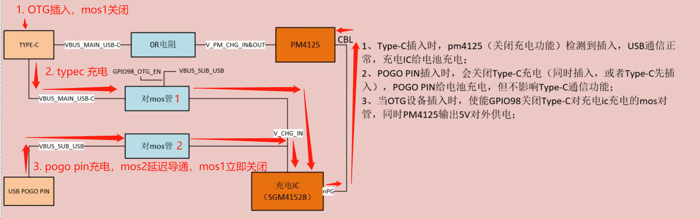

m92xx usb switch功能调试
m92xx存在底座充电和typec充电功能，有一定能过逻辑。
硬件原理
TIP：
对mos管1高电平关闭。
对mos管2为硬件延迟电路，默认关闭，只有pogo pin插入才导通，延迟电路功能是防止pogo pin插入充电时，反向给pm4125充电。
底座只保留充电功能，当底座充电时，typec口依旧保留功能，不确定当接入OTG时，充电状态会不会变？
该电路主要实现以下三种情况：
当插入OTG设备，使能OTG_EN脚关闭对mos管1，由pm4125识别cc切换host，并进行对外供电。
typec充电，pm4125检测到输入，切换device，Type-C给电池充电。
POGO PIN插入时，对mos管2导通，对mos管1关闭，相当于关闭Type-C充电，POGO PIN给电池充电，Type-C可作host/device功能。

mos管硬件原理图：
问题点
插入OTG不能及时关闭导致识别到充电状态
正常情况，当插入OTG设备，使能OTG_EN脚关闭对mos管1，由pm4125识别cc切换host，并进行对外供电，但是实际关闭对mos管1有2s延迟，导致pm4125对charger V_CHG_IN也供电了，就识别到充电。
目前临时解决方案是，默认使能OTG_EN，mos管1默认关闭，当接入typec充电时OTG_EN拉低，关闭充电再拉高。
接OTG开机卡住20s才启动
将otg线插在机器上开机会卡住，查看打印如下：
D - 10460 - sbl1_do_ddr_training
D - 2 - sbl1_hand_control_to_devprog_ddr_or_ddi
B - 474152 - Pimem init cmd, entry
D - 9924 - Pimem init cmd, exit
D - 15624 - sbl1_post_ddr_init
D - 8 - sbl1_hw_init_secondary
B - 496343 - APDP Image Loaded, Start
D - 2649 - APDP Image Loaded, Delta - (0 Bytes)
D - 4 - boot_dload_dump_security_regions
B - 507354 - usb: Serial - 19226eaa
B - 1663061 - usb: charger type INVALID prim: , 0x1
...重复打印100次...
B - 114994081 - usb: charger type INVALID prim: , 0x1
B - 114999170 - usb phy: chgr - INVALID
B - 114999200 - usb: fedl, chgr_det_timeout
D - 114495527 - boot_dload_check
D - 2 - boot_cache_set_memory_barrier
D - 3 - boot_smem_debug_init
D - 331 - boot_smem_init
D - 4 - boot_smem_alloc_for_minidump
D - 47 - boot_smem_store_pon_status
D - 12 - sbl1_hw_platform_smem
D - 114 - boot_clock_init_rpm
D - 1 - boot_vsense_copy_to_smem
D - 2 - boot_share_flash_data
D - 7 - boot_populate_ram_partition_table
D - 7 - boot_populate_ddr_details_shared_table
D - 5 - sbl1_tlmm_init
原因是，开机时otg enble脚没被使能，mos管1是导通的，当otg插入时模块vbus接入charger ic上就识别成充电了，而一直识别不到充电类型，轮询了100次很耗时。
修改方案：
--- a/A665x_Unpacking_Tool/BOOT.XF.4.1/boot_images/QcomPkg/SocPkg/AgattiPkg/Library/QusbLdrLib/qusb_ldr_utils.c
+++ b/A665x_Unpacking_Tool/BOOT.XF.4.1/boot_images/QcomPkg/SocPkg/AgattiPkg/Library/QusbLdrLib/qusb_ldr_utils.c
@@ -72,8 +72,13 @@
#define QUSB_LINESTATE_CHECK_RETRY_CNT (10000) //50msec is the total wait time to deal with a bad cable
#define QUSB_DCI_PM_AGATTI_INDEX (0)
+#ifdef M92xx
+//[BUGFIX]-BEGIN by (xxx@xxxxx.com), 2023/02/13 When restarting, inserting otg is recognized as charging when otg enable otg is off
+#define QUSB_CHARGER_DETECT_RETRY_CNT (3) //(100)
+//[BUGFIX]-END by (xxx@xxxxx.com), 2023/02/13 When restarting, inserting otg is recognized as charging when otg enable otg is off
+#else
#define QUSB_CHARGER_DETECT_RETRY_CNT (100)
-
+#endif
修改后只轮询了2次：
D - 15625 - sbl1_post_ddr_init
D - 8 - sbl1_hw_init_secondary
B - 496018 - APDP Image Loaded, Start
D - 2665 - APDP Image Loaded, Delta - (0 Bytes)
D - 4 - boot_dload_dump_security_regions
B - 507046 - usb: Serial - 19226eaa
B - 1662753 - usb: charger type INVALID prim: , 0x1
B - 2819195 - usb: charger type INVALID prim: , 0x1
B - 2824284 - usb phy: chgr - INVALID
B - 2824315 - usb: fedl, chgr_det_timeout